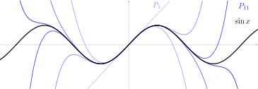
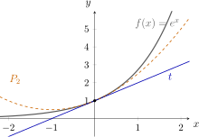
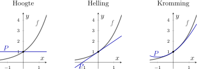
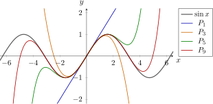

Taylorpolynomen

Leerplandoelstellingen (GO! Navigator)
Basisvorming (BV3_06)
-
• BV3_06.03 (MD 06.03) De leerlingen interpreteren de afgeleide als limiet van een differentiequotiënt en als richtingscoëfficiënt van de raaklijn aan de grafiek.
Gevorderde wiskunde (WD3_06.08)
-
• WD3_06.08.28 De leerlingen berekenen de afgeleide functie van functies die zijn opgebouwd uit veeltermfuncties, rationale functies, irrationale functies, exponentiële functies, logaritmische functies, goniometrische functies en cyclometrische functies.
-
– afbakening: afleidbaarheid
-
– afbakening: rekenregels: afgeleide van een som, product, quotiënt van functies en afgeleide van een samengestelde functie (kettingregel)
-
– afbakening: regel van de l’Hôpital
-
– WD3_06.08.28.01 (MD 06.08.17) De leerlingen berekenen de afgeleide functie van functies die zijn opgebouwd uit veeltermfuncties, rationale functies, irrationale functies, exponentiële functies, logaritmische functies en goniometrische functies.
-
– WD3_06.08.28.02 De leerlingen berekenen de afgeleide functie van functies die zijn opgebouwd uit cyclometrische functies.
-
Extra uitleg: faculteit en sommatieteken, lineaire benadering, Taylorpolynoom rond \(0\) en rond \(a\), Taylorpolynomen van \(e^x\), \(\sin x\), \(\cos x\), \(\ln (1+x)\) en \(\sqrt {x}\), restterm van Lagrange en foutafschatting
I Inleiding
1 Hoe rekent een rekenmachine?
Typ \(\sin 0.3\) in je rekenmachine (in radialen). Je krijgt meteen
\[ \sin 0.3 = 0.295\,520\,206\,6\ldots \]
Maar hoe weet de rekenmachine dat? Een chip kan enkel optellen, aftrekken, vermenigvuldigen en delen. Een sinus uitrekenen staat daar niet bij.
Een veelterm kan een chip wel uitrekenen: daar komen enkel die vier bewerkingen in voor. Kijk wat deze veelterm doet:
\[ x - \frac {x^3}{6} + \frac {x^5}{120} \qquad \Rightarrow \qquad 0.3 - \frac {0.027}{6} + \frac {0.002\,43}{120} = 0.3 - 0.0045 + 0.000\,020\,25 = 0.295\,520\,25. \]
Dat zijn zeven juiste cijfers na de komma, met een paar vermenigvuldigingen.
In dit hoofdstuk ontdekken we waar die veelterm vandaan komt, waarom er net \(6\) en \(120\) in de noemers staan, en hoe we voor bijna elke functie zo’n veelterm vinden. Die veelterm heet een Taylorpolynoom.
Een echte rekenmachine combineert dit idee met andere trucs, zoals tabellen en het herleiden van een grote hoek naar een kleine. Maar het hart van de berekening blijft een veelterm.
2 Zo werk je met dit hoofdstuk
Dit hoofdstuk verwerk je zelfstandig. Neem er pen en papier bij: je leert het meest als je de voorbeelden eerst zelf probeert.
-
• Werk de slides in volgorde af. Elk onderdeel steunt op het vorige.
-
• Bij elke interactieve grafiek staat wat je kunt verslepen of aanklikken. Probeer het echt uit: de grafieken tonen wat in de tekst staat.
-
• Na elk deel volgen oefeningen bij die leerstof. Maak ze meteen, op papier, voor je verdergaat.
-
• Een oplossing staat verborgen achter een oogje. Probeer de oefening eerst zelf en kijk dan pas.
-
• Bovenaan staat de knop Rekenmachine (sneltoets m). Typ bijvoorbeeld f(x) = ln(1+x) en daarna f’’’(0): je krijgt de derde afgeleide in \(0\), stap voor stap. In het deel Grafiek teken je een functie samen met de veelterm die je zelf vond, zoals g(x) = x - x̂3/6. Zo controleer je je werk.
-
• De Python-codeblokken kun je op de site uitvoeren en aanpassen.
3 Voorkennis: de faculteit
We zullen vaak het product \(1\cdot 2\cdot 3\cdots n\) nodig hebben. Daar is een korte notatie voor: de faculteit van \(n\),
\[ n! = 1\cdot 2\cdot 3\cdots n \qquad \text {en we spreken af:}\qquad 0! = 1. \]
Een faculteit groeit erg snel:
\[ \begin {array}{c|ccccccccccc} n & 0 & 1 & 2 & 3 & 4 & 5 & 6 & 7 & 8 & 9 & 10 \\ \hline n! & 1 & 1 & 2 & 6 & 24 & 120 & 720 & 5040 & 40320 & 362880 & 3628800 \end {array} \]
Herken je de \(6\) en de \(120\) uit de inleiding? Dat is \(3!\) en \(5!\).
Handig om te onthouden is
\[ n! = n\cdot (n-1)! \qquad \text {bijvoorbeeld}\qquad \frac {7!}{6!} = \frac {7\cdot \cancel {6!}}{\cancel {6!}} = 7. \]
De afspraak \(0!=1\) past bij deze regel: met \(n=1\) staat er \(1! = 1\cdot 0!\), dus moet \(0!\) wel \(1\) zijn.
4 Voorkennis: het sommatieteken
Een lange som schrijven we korter met het sommatieteken \(\sum \) (de Griekse hoofdletter sigma, van som):
\[ \sum _{k=0}^{4} \frac {x^k}{k!} = \frac {x^0}{0!} + \frac {x^1}{1!} + \frac {x^2}{2!} + \frac {x^3}{3!} + \frac {x^4}{4!} = 1 + x + \frac {x^2}{2} + \frac {x^3}{6} + \frac {x^4}{24}. \]
Lees dit als: neem voor \(k\) achtereenvolgens \(0\), \(1\), \(2\), \(3\) en \(4\), vul in, en tel alles op. De letter \(k\) is de index: ze telt enkel en staat niet meer in het resultaat.
Probeer zelf
Schrijf voluit:
\[ \sum _{k=1}^{4} \frac {(-1)^{k+1}}{k} = \opl {1 - \frac 12 + \frac 13 - \frac 14} \]
\[ \sum _{k=0}^{3} 2^k x^k = \opl {1 + 2x + 4x^2 + 8x^3} \]
De factor \((-1)^{k+1}\) is een gekend kunstje: hij is \(+1\) voor oneven \(k\) en \(-1\) voor even \(k\). Zo wisselen de tekens af.
5 Oefeningen
Oefening 1
Bereken zonder rekenmachine.
-
(a) \(5!\)
\(5! = 120\)
\(\seteqnumber{0}{}{0}\)\begin{align*} 5! &= 1\cdot 2\cdot 3\cdot 4\cdot 5\\ &= 120 \end{align*}
-
(b) \(\dfrac {8!}{6!}\)
\(\dfrac {8!}{6!} = 56\)
\(\seteqnumber{0}{}{0}\)\begin{align*} \frac {8!}{6!} &= \frac {8\cdot 7\cdot \cancel {6!}}{\cancel {6!}}\\ &= 8\cdot 7\\ &= 56 \end{align*}
-
(c) \(\dfrac {(n+1)!}{n!}\)
\(\dfrac {(n+1)!}{n!} = n+1\)
\(\seteqnumber{0}{}{0}\)\begin{align*} \frac {(n+1)!}{n!} &= \frac {(n+1)\cdot \cancel {n!}}{\cancel {n!}}\\ &= n+1 \end{align*}
-
(d) \(\displaystyle \sum _{k=0}^{3} \frac {x^{2k}}{k!}\)
\(1 + x^2 + \dfrac {x^4}{2} + \dfrac {x^6}{6}\)
\(\seteqnumber{0}{}{0}\)\begin{align*} \sum _{k=0}^{3} \frac {x^{2k}}{k!} &= \frac {x^0}{0!} + \frac {x^2}{1!} + \frac {x^4}{2!} + \frac {x^6}{3!}\\ &= 1 + x^2 + \frac {x^4}{2} + \frac {x^6}{6} \end{align*}
II Benaderen met een raaklijn
1 Inzoomen op een grafiek
Zoom in op een grafiek rond een punt waar ze een raaklijn heeft. Hoe verder je inzoomt, hoe rechter de grafiek lijkt. Uiteindelijk zie je het verschil met de raaklijn niet meer.

De raaklijn \(t\) aan de grafiek van \(f\) in het punt \(\bigl (a,f(a)\bigr )\) ken je uit het hoofdstuk over afgeleiden:
\[ t \leftrightarrow y - f(a) = f'(a)\,(x-a) \qquad \iff \qquad y = f(a) + f'(a)\,(x-a). \]
Omdat grafiek en raaklijn dicht bij \(a\) bijna samenvallen, gebruiken we de raaklijn als benadering:
\[ \boxed {\;f(x) \approx f(a) + f'(a)\,(x-a) \qquad \text {voor $x$ dicht bij $a$}\;} \]
Dat heet de lineaire benadering van \(f\) rond \(a\). Een eerstegraads veelterm, dus: we noemen ze \(P_1(x)\).
2 Voorbeeld: \(e^{0.1}\)
1. Kies de functie en het steunpunt.
We benaderen \(e^{0.1}\) met \(f(x)=e^x\) rond \(a=0\), want \(e^0=1\).
\(\seteqnumber{0}{}{0}\)\begin{align*} f(x) &= e^x & f(0) &= 1\\ f'(x) &= e^x & f'(0) &= 1 \end{align*}
2. Stel de lineaire benadering op.
\(\seteqnumber{0}{}{0}\)\begin{align*} P_1(x) &= f(a)+f'(a)\,(x-a)\\ &= 1+1\cdot (x-0)\\ &= 1+x \end{align*}
3. Vul \(x=0.1\) in.
\[ e^{0.1} \approx P_1(0.1)=1+0.1=\boxed {1.1}. \]
Controle: \(e^{0.1}=1.105\,17\ldots \) De fout is ongeveer \(0.005\).
3 Voorbeeld: \(\sqrt {4.1}\)
1. Kies de functie en het steunpunt.
We benaderen \(\sqrt {4.1}\) met \(f(x)=\sqrt {x}\) rond \(a=4\), want \(\sqrt {4}=2\).
\(\seteqnumber{0}{}{0}\)\begin{align*} f(x) &= \sqrt {x} & f(4) &= 2\\ f'(x) &= \frac {1}{2\sqrt {x}} & f'(4) &= \frac {1}{2\sqrt {4}}=\frac 14 \end{align*}
2. Stel de lineaire benadering op.
\(\seteqnumber{0}{}{0}\)\begin{align*} P_1(x) &= f(a)+f'(a)\,(x-a)\\ &= 2+\frac 14\,(x-4) \end{align*}
3. Vul \(x=4.1\) in.
\(\seteqnumber{0}{}{0}\)\begin{align*} \sqrt {4.1} \approx P_1(4.1) &= 2+\frac 14\,(4.1-4)\\ &= 2+\frac 14\cdot 0.1=\boxed {2.025}. \end{align*} Controle: \(\sqrt {4.1}=2.024\,845\ldots \) De fout is ongeveer \(0.000\,15\).
Kies \(a\) dicht bij het getal dat je invult, zodat je \(f(a)\) en \(f'(a)\) gemakkelijk kunt berekenen.
4 Waar de raaklijn tekortschiet
Kijk nog eens naar de grafiek van \(e^x\) met haar raaklijn. Hoe verder \(x\) van \(0\) ligt, hoe groter de fout. Dat is logisch: de grafiek buigt, de raaklijn niet.
\[ \begin {array}{c|c|c|c} x & e^x & 1+x & \text {fout} \\ \hline 0.1 & 1.105\,17 & 1.1 & 0.005 \\ 0.5 & 1.648\,72 & 1.5 & 0.149 \\ 1 & 2.718\,28 & 2 & 0.718 \end {array} \]
De raaklijn heeft dezelfde hoogte en dezelfde helling als de grafiek in \(a\). Om ook het buigen na te bootsen, hebben we iets nodig met dezelfde kromming. Die kromming meet de tweede afgeleide. We hebben dus een kromme lijn nodig: een parabool.
5 Oefeningen
Oefening 2
Benader met de raaklijn (de lineaire benadering). Kies zelf een geschikt punt \(a\) en vergelijk met je rekenmachine.
-
(a) \(\sqrt {9.2}\)
\(\sqrt {9.2} \approx 3.0333\) \(f(x) = \sqrt {x}\) en \(a = 9\): \(f(9) = 3\) en \(f'(x) = \dfrac {1}{2\sqrt {x}}\), dus \(f'(9) = \dfrac 16\).
\[ \sqrt {9.2} \approx 3 + \frac 16\cdot 0.2 = 3.0333\ldots \]
Exact is \(\sqrt {9.2} = 3.0332\ldots \)
-
(b) \(\ln 1.05\)
\(\ln 1.05 \approx 0.05\) \(f(x) = \ln x\) en \(a = 1\): \(f(1) = 0\) en \(f'(x) = \dfrac 1x\), dus \(f'(1) = 1\).
\[ \ln 1.05 \approx 0 + 1\cdot 0.05 = 0.05 \]
Exact is \(\ln 1.05 = 0.0488\ldots \)
III Benaderen met een parabool
1 Drie voorwaarden
We zoeken een tweedegraadsveelterm
\[ P_2(x) = c_0 + c_1 x + c_2 x^2 \]
die zo goed mogelijk bij \(f(x) = e^x\) past rond \(0\). We eisen dat \(P_2\) in \(0\) dezelfde waarde, dezelfde eerste afgeleide en dezelfde tweede afgeleide heeft als \(f\):
\[ P_2(0) = f(0), \qquad P_2'(0) = f'(0), \qquad P_2''(0) = f''(0). \]
We leiden \(P_2\) af en vullen \(0\) in:
\[ \begin {array}{lll} P_2(x) = c_0 + c_1x + c_2x^2 & \Rightarrow & P_2(0) = c_0 \\[0.4em] P_2'(x) = c_1 + 2c_2x & \Rightarrow & P_2'(0) = c_1 \\[0.4em] P_2''(x) = 2c_2 & \Rightarrow & P_2''(0) = 2c_2 \end {array} \]
Voor \(f(x) = e^x\) zijn alle afgeleiden opnieuw \(e^x\), dus \(f(0) = f'(0) = f''(0) = 1\). De drie voorwaarden worden
\[ \begin {cases} c_0 = 1\\ c_1 = 1\\ 2c_2 = 1 \end {cases} \qquad \Rightarrow \qquad c_0 = 1, \quad c_1 = 1, \quad c_2 = \frac 12. \]
Besluit:
\[ \boxed {\;e^x \approx 1 + x + \frac {x^2}{2}\qquad \text {voor $x$ dicht bij $0$}\;} \]
Let op de \(\frac 12\): die komt van de factor \(2\) die verschijnt als je \(x^2\) twee keer afleidt.
Grafische verduidelijking
We bouwen de benadering van \(f(x)=e^x\) rond \(0\) stap voor stap op:
-
• \(P(x)=1\): dezelfde hoogte, maar nog een horizontale lijn.
-
• \(P(x)=1+x\): ook dezelfde helling, maar nog geen buiging.
-
• \(P(x)=1+x+\frac {x^2}{2}\): ook dezelfde kromming in \(0\).

Dezelfde hoogte en helling geven de raaklijn. Met dezelfde tweede afgeleide volgt de parabool ook de buiging rond \(0\).
Hoeveel beter?
\[ \begin {array}{c|c|c|c|c|c} x & e^x & 1+x & \text {fout} & 1+x+\frac {x^2}{2} & \text {fout} \\ \hline 0.1 & 1.105\,17 & 1.1 & 0.005 & 1.105 & 0.000\,17 \\ 0.5 & 1.648\,72 & 1.5 & 0.149 & 1.625 & 0.024 \\ 1 & 2.718\,28 & 2 & 0.718 & 2.5 & 0.218 \end {array} \]
Bij \(x = 0.1\) is de fout dertig keer kleiner geworden. Ga terug naar de grafiek bij Inzoomen op een grafiek, klik op Parabool tonen en zoom in: de parabool blijft veel langer tegen de grafiek aan liggen dan de raaklijn.
2 Voorbeeld: \(\cos x\)
\[ f(x) = \cos x \]
Probeer het eerst zelf: zoek \(P_2(x) = c_0 + c_1x + c_2x^2\) met dezelfde waarde, eerste en tweede afgeleide als \(\cos x\) in \(0\).
\begin{align*} f(x) &= \cos x & f(0) &= 1 & c_0 &= 1\\ f'(x) &= -\sin x & f'(0) &= 0 & c_1 &= 0\\ f''(x) &= -\cos x & f''(0) &= -1 & 2c_2 &= -1 \;\Rightarrow \; c_2 = -\frac 12 \end{align*}
\[ \boxed {\;\cos x \approx 1 - \frac {x^2}{2}\;} \]
Controle: \(\cos 0.2 \approx 1 - \frac {0.04}{2} = 0.98\), en exact is \(\cos 0.2 = 0.980\,07\ldots \)
De raaklijn aan \(\cos x\) in \(0\) is horizontaal: \(P_1(x) = 1\). Die benadering zegt niets over hoe de cosinus daalt. Pas de parabool ziet dat de grafiek naar beneden buigt.
Zelf tekenen met de TI-84
Druk quitmode, kies RADIAN en bevestig met entrysolveenter.
We vergelijken de cosinus met een veelterm. Daarom werken we in radialen.
Druk statplotf1y= en voer de drie voorschriften in.
\(Y_1\) is de cosinus, \(Y_2\) de raaklijn en \(Y_3\) de parabool. Gebruik linkX,T,θ,n voor \(X\) en πH^ voor de macht.
Druk tblsetf2window en stel het venster in.
We bekijken de grafieken aan beide kanten van \(0\). Typ negatieve getallen met ans?(−).
Druk tablef5graph.
Welke twee grafieken buigen samen naar beneden?
Druk tblsetf2window en kies een kleiner venster rond \((0,1)\).
Zo bekijken we hoe goed de benaderingen vlak bij \(0\) aansluiten.
Druk opnieuw tablef5graph.
Welke benadering sluit rond \(0\) het best aan bij de cosinus: de raaklijn of de parabool?
3 Oefeningen
Oefening 3
Zoek de parabool \(P_2(x) = c_0 + c_1x + c_2x^2\) die in \(0\) dezelfde waarde, eerste en tweede afgeleide heeft als \(f\).
-
(a) \(f(x) = e^{-x}\). Benader daarmee \(e^{-0.2}\) en vergelijk met de raaklijn en met je rekenmachine.
\(P_2(x) = 1 - x + \dfrac {x^2}{2}\), \(e^{-0.2} \approx 0.82\)
\(\seteqnumber{0}{}{0}\)\begin{align*} f(x) &= e^{-x} & f(0) &= 1 & c_0 &= 1\\ f'(x) &= -e^{-x} & f'(0) &= -1 & c_1 &= -1\\ f''(x) &= e^{-x} & f''(0) &= 1 & 2c_2 &= 1 \;\Rightarrow \; c_2 = \frac 12 \end{align*}
\[ P_2(x) = 1 - x + \frac {x^2}{2} \qquad \text {dus}\qquad e^{-0.2} \approx 1 - 0.2 + 0.02 = 0.82 \]
De raaklijn \(P_1(x) = 1 - x\) geeft \(0.8\). Exact is \(e^{-0.2} = 0.8187\ldots \): de fout daalt van \(0.019\) naar \(0.0013\).
-
(b) \(f(x) = \sin x\). Wat valt je op?
\(P_2(x) = x\)
\(\seteqnumber{0}{}{0}\)\begin{align*} f(x) &= \sin x & f(0) &= 0 & c_0 &= 0\\ f'(x) &= \cos x & f'(0) &= 1 & c_1 &= 1\\ f''(x) &= -\sin x & f''(0) &= 0 & 2c_2 &= 0 \;\Rightarrow \; c_2 = 0 \end{align*}
\[ P_2(x) = x \]
De parabool is hier de raaklijn zelf: \(c_2 = 0\). De grafiek van \(\sin x\) buigt in \(0\) niet, want \(0\) is een buigpunt. Een betere benadering vraagt een term met \(x^3\).
IV Het Taylorpolynoom
1 Het patroon
Wat voor de parabool werkte, werkt voor elke graad. Neem een veelterm van graad \(3\) en leid af tot er een constante overblijft:
\[ \begin {array}{lll} P(x) = c_0 + c_1x + c_2x^2 + c_3x^3 & \Rightarrow & P(0) = c_0 \\[0.4em] P'(x) = c_1 + 2c_2x + 3c_3x^2 & \Rightarrow & P'(0) = c_1 \\[0.4em] P''(x) = 2c_2 + 3\cdot 2\,c_3x & \Rightarrow & P''(0) = 2\,c_2 \\[0.4em] P'''(x) = 3\cdot 2\cdot 1\,c_3 & \Rightarrow & P'''(0) = 3!\,c_3 \end {array} \]
Leid je \(c_kx^k\) \(k\) keer af, dan blijft \(k\cdot (k-1)\cdots 1\cdot c_k = k!\,c_k\) over. Alle andere termen zijn ofwel al verdwenen, ofwel bevatten ze nog een \(x\) en worden ze \(0\) als je \(x=0\) invult. Dus
\[ \boxed {\;P^{(k)}(0) = k!\,c_k\;} \]
Willen we dat \(P^{(k)}(0) = f^{(k)}(0)\), dan moet
\[ c_k = \frac {f^{(k)}(0)}{k!}. \]
2 Definitie
Het Taylorpolynoom van graad \(n\) van \(f\) rond \(0\) is
\[ \boxed {\; \begin {aligned} P_n(x) &= f(0) + \frac {f'(0)}{1!}\,x + \frac {f''(0)}{2!}\,x^2 + \cdots + \frac {f^{(n)}(0)}{n!}\,x^n\\ &= \sum _{k=0}^{n} \frac {f^{(k)}(0)}{k!}\,x^k \end {aligned}\;} \]
Het is de enige veelterm van graad hoogstens \(n\) die in \(0\) dezelfde waarde en dezelfde eerste \(n\) afgeleiden heeft als \(f\).
Rond een ander punt \(a\) werken we met machten van \((x-a)\) in plaats van machten van \(x\):
\[ \boxed {\; \begin {aligned} P_n(x) &= f(a) + \frac {f'(a)}{1!}\,(x-a) + \frac {f''(a)}{2!}\,(x-a)^2 + \cdots + \frac {f^{(n)}(a)}{n!}\,(x-a)^n\\ &= \sum _{k=0}^{n} \frac {f^{(k)}(a)}{k!}\,(x-a)^k \end {aligned}\;} \]
Met \(n = 1\) vind je de raaklijn uit het vorige onderdeel terug.
Een Taylorpolynoom rond \(0\) heet ook een Maclaurinpolynoom. Waar de namen vandaan komen, lees je op het einde van dit onderdeel.
3 Werkwijze
Een Taylorpolynoom bepaal je in vier stappen. Zet ze in een tabel, dan vergeet je niets.
-
1. Bereken de afgeleiden \(f'(x)\), \(f''(x)\), …, \(f^{(n)}(x)\).
-
2. Vul \(a\) in: \(f(a)\), \(f'(a)\), …, \(f^{(n)}(a)\).
-
3. Deel door \(k!\): dat geeft de coëfficiënt \(c_k = \dfrac {f^{(k)}(a)}{k!}\).
-
4. Schrijf \(P_n(x) = c_0 + c_1(x-a) + c_2(x-a)^2 + \cdots + c_n(x-a)^n\).
Met de knop Rekenmachine controleer je stap 1 en 2: typ f(x) = ... en daarna bijvoorbeeld f’’’(0).
4 Voorbeeld: \(e^x\)
\[ f(x) = e^x \]
Alle afgeleiden van \(e^x\) zijn \(e^x\), en \(e^0 = 1\):
\[ \begin {array}{c|c|c|c} k & f^{(k)}(x) & f^{(k)}(0) & c_k = \frac {f^{(k)}(0)}{k!} \\ \hline 0 & e^x & 1 & 1 \\ 1 & e^x & 1 & 1 \\ 2 & e^x & 1 & \frac {1}{2} \\ 3 & e^x & 1 & \frac {1}{6} \\ \vdots & \vdots & \vdots & \vdots \\ n & e^x & 1 & \frac {1}{n!} \end {array} \]
\[ \boxed {\; e^x \approx P_n(x) = 1 + x + \frac {x^2}{2!} + \frac {x^3}{3!} + \cdots + \frac {x^n}{n!}\;} \]
Vul \(x = 1\) in, dan krijg je een benadering van het getal \(e\):
\[ e \approx 1 + 1 + \frac 12 + \frac 16 + \frac 1{24} + \frac 1{120} = 2.716\,66\ldots \]
Met zes termen kloppen al drie cijfers na de komma (\(e = 2.718\,28\ldots \)).
5 Taylorpolynomen verkennen
Hoe ziet een Taylorpolynoom eruit naast zijn functie? Kies een functie, verhoog de graad \(n\) en kijk waar de benadering goed is.

Wat zie je?
-
• Bij \(a\) ligt \(P_n\) altijd tegen de grafiek. Hoe verder weg, hoe slechter de benadering.
-
• Hoe hoger de graad, hoe groter het stuk waar de benadering goed is.
-
• Bij \(\sin x\), \(\cos x\) en \(e^x\) groeit dat stuk zonder einde mee met \(n\). Bij \(\ln (1+x)\) en \(\frac {1}{1-x}\) niet: voorbij een bepaalde grens helpt een hogere graad niet meer.
6 Voorbeeld: \(\sin x\)
\[ f(x) = \sin x \]
De afgeleiden van \(\sin x\) herhalen zich na vier stappen:
\[ \begin {array}{c|c|c|c} k & f^{(k)}(x) & f^{(k)}(0) & c_k \\ \hline 0 & \sin x & 0 & 0 \\ 1 & \cos x & 1 & 1 \\ 2 & -\sin x & 0 & 0 \\ 3 & -\cos x & -1 & -\frac {1}{3!} \\ 4 & \sin x & 0 & 0 \\ 5 & \cos x & 1 & \frac {1}{5!} \\ 6 & -\sin x & 0 & 0 \\ 7 & -\cos x & -1 & -\frac {1}{7!} \end {array} \]
\[ \boxed {\; \sin x \approx x - \frac {x^3}{3!} + \frac {x^5}{5!} - \frac {x^7}{7!}\;} \]
Dat is de veelterm uit de inleiding: \(3! = 6\) en \(5! = 120\).
Er staan enkel oneven machten in. Dat past: \(\sin x\) is een oneven functie (\(\sin (-x) = -\sin x\)), en een veelterm met enkel oneven machten ook. Omdat \(c_4 = 0\), is \(P_3 = P_4\): de benadering van graad \(3\) is meteen ook die van graad \(4\).
7 Voorbeeld: \(\cos x\)
\[ f(x) = \cos x \]
Probeer zelf: bepaal \(P_6\) van \(\cos x\) rond \(0\). Gebruik dezelfde tabel als bij \(\sin x\).
\(\cos x \approx 1 - \dfrac {x^2}{2!} + \dfrac {x^4}{4!} - \dfrac {x^6}{6!}\)
\[ \begin {array}{c|c|c|c} k & f^{(k)}(x) & f^{(k)}(0) & c_k \\ \hline 0 & \cos x & 1 & 1 \\ 1 & -\sin x & 0 & 0 \\ 2 & -\cos x & -1 & -\frac {1}{2!} \\ 3 & \sin x & 0 & 0 \\ 4 & \cos x & 1 & \frac {1}{4!} \\ 5 & -\sin x & 0 & 0 \\ 6 & -\cos x & -1 & -\frac {1}{6!} \end {array} \]
\[ \cos x \approx 1 - \frac {x^2}{2!} + \frac {x^4}{4!} - \frac {x^6}{6!} = 1 - \frac {x^2}{2} + \frac {x^4}{24} - \frac {x^6}{720} \]
Nu staan er enkel even machten in: \(\cos x\) is een even functie.
8 Voorbeeld: \(\ln (1+x)\)
\[ f(x) = \ln (1+x) \]
Van \(\ln x\) kunnen we geen Taylorpolynoom rond \(0\) maken: \(\ln 0\) bestaat niet. Daarom nemen we \(f(x) = \ln (1+x)\), die in \(0\) wel bestaat.
\[ \begin {array}{c|c|c|c} k & f^{(k)}(x) & f^{(k)}(0) & c_k \\ \hline 0 & \ln (1+x) & 0 & 0 \\[0.3em] 1 & (1+x)^{-1} & 1 & 1 \\[0.3em] 2 & -(1+x)^{-2} & -1 & -\frac {1}{2} \\[0.3em] 3 & 2\,(1+x)^{-3} & 2 & \frac {2}{3!} = \frac 13 \\[0.3em] 4 & -2\cdot 3\,(1+x)^{-4} & -6 & -\frac {6}{4!} = -\frac 14 \end {array} \]
\[ \boxed {\; \ln (1+x) \approx x - \frac {x^2}{2} + \frac {x^3}{3} - \frac {x^4}{4}\;} \]
Hier vallen de faculteiten weg: \(f^{(k)}(0)\) is \(\pm (k-1)!\), en \(\frac {(k-1)!}{k!} = \frac 1k\).
Wil je toch \(\ln x\) benaderen, maak dan een Taylorpolynoom rond \(a=1\):
\[ \ln x \approx (x-1) - \frac {(x-1)^2}{2} + \frac {(x-1)^3}{3} - \cdots \]
Dat is hetzelfde polynoom, met \(x-1\) in de plaats van \(x\).
9 Voorbeeld: rond een ander punt
We maken van \(f(x) = \sqrt {x}\) het Taylorpolynoom van graad \(2\) rond \(a = 4\), en benaderen er \(\sqrt {4.1}\) mee.
\(\seteqnumber{0}{}{0}\)\begin{align*} f(x) &= x^{\frac 12} & f(4) &= 2 & c_0 &= 2\\ f'(x) &= \tfrac 12\,x^{-\frac 12} & f'(4) &= \tfrac 12\cdot \tfrac 12 = \tfrac 14 & c_1 &= \tfrac 14\\ f''(x) &= -\tfrac 14\,x^{-\frac 32} & f''(4) &= -\tfrac 14\cdot \tfrac 18 = -\tfrac {1}{32} & c_2 &= \frac {-\frac {1}{32}}{2!} = -\tfrac {1}{64} \end{align*}
\[ \sqrt {x} \approx P_2(x) = 2 + \frac 14\,(x-4) - \frac {1}{64}\,(x-4)^2 \]
Met \(x = 4.1\) is \(x - 4 = 0.1\):
\[ \sqrt {4.1} \approx 2 + 0.025 - \frac {0.01}{64} = 2 + 0.025 - 0.000\,156\,25 = 2.024\,843\,75. \]
Exact is \(\sqrt {4.1} = 2.024\,845\,67\ldots \) De raaklijn gaf \(2.025\), met een fout van \(0.000\,15\). De parabool doet het honderd keer beter: de fout is nog \(0.000\,002\).
Let op \(4^{-\frac 32} = \dfrac {1}{4^{\frac 32}} = \dfrac {1}{\sqrt {4}^{\,3}} = \dfrac 18\).
10 Een veelterm is haar eigen Taylorpolynoom
Neem \(f(x) = x^3\) en maak het Taylorpolynoom van graad \(3\) rond \(a=1\).
\(\seteqnumber{0}{}{0}\)\begin{align*} f(x) &= x^3 & f(1) &= 1 & c_0 &= 1\\ f'(x) &= 3x^2 & f'(1) &= 3 & c_1 &= 3\\ f''(x) &= 6x & f''(1) &= 6 & c_2 &= \tfrac {6}{2!} = 3\\ f'''(x) &= 6 & f'''(1) &= 6 & c_3 &= \tfrac {6}{3!} = 1 \end{align*}
\[ P_3(x) = 1 + 3(x-1) + 3(x-1)^2 + (x-1)^3 \]
Werk je dit uit, dan vind je opnieuw \(x^3\). Dat is geen toeval: een veelterm van graad \(3\) is al een veelterm, dus de beste benadering van graad \(3\) is ze zelf. Het Taylorpolynoom schrijft ze enkel anders, in machten van \((x-1)\).
Herken je de coëfficiënten \(1\), \(3\), \(3\), \(1\)? Het is het binomium van Newton toegepast op \(x^3 = \bigl (1 + (x-1)\bigr )^3\).
11 Waar het vandaan komt
De formule draagt de naam van de Engelse wiskundige Brook Taylor (1685 tot 1731). Hij publiceerde ze in 1715 in zijn boek Methodus incrementorum directa et inversa. Taylor vertrok niet van afgeleiden, maar van een formule met differenties: hoe veranderen de waarden van een functie als \(x\) telkens met dezelfde stap toeneemt? Laat hij die stap naar nul gaan, dan blijft de formule over die wij nu naar hem noemen. In hetzelfde boek beschrijft hij ook als een van de eersten hoe een gespannen snaar trilt. Op het portret toont hij een ander boek uit hetzelfde jaar, over perspectief.
De Schot Colin Maclaurin (1698 tot 1746) werkte in 1742 in zijn Treatise of Fluxions het geval \(a = 0\) uitvoerig uit en gebruikte het om grafieken te onderzoeken. Hij vermeldde zelf dat de formule van Taylor kwam. Toch kreeg het geval rond \(0\) zijn naam: het Maclaurinpolynoom.
Het idee is ouder dan die namen. De Schot James Gregory kende rond 1671 al de Taylorpolynomen van de boogtangens en van \(\tan x\), tot een willekeurig hoge graad, maar hij publiceerde zijn methode niet. Nog vroeger, rond 1400, vond Madhava van Sangamagrama in Kerala, in het zuiden van India, die van \(\sin x\), \(\cos x\) en de boogtangens. Zijn werk kennen we enkel uit boeken die zijn leerlingen later schreven, en een portret van hem bestaat niet. De restterm die we in het volgende onderdeel gebruiken, kwam er pas in 1797, bij Joseph-Louis Lagrange.
12 Oefeningen
Oefening 4
Bepaal het Taylorpolynoom van graad \(3\) rond \(0\).
-
(a) \(f(x) = e^{2x}\)
\(P_3(x) = 1 + 2x + 2x^2 + \dfrac {4}{3}x^3\) Bij elke afgeleide komt er een factor \(2\) bij (kettingregel).
\[ \begin {array}{c|c|c|c} k & f^{(k)}(x) & f^{(k)}(0) & c_k \\ \hline 0 & e^{2x} & 1 & 1 \\ 1 & 2e^{2x} & 2 & 2 \\ 2 & 4e^{2x} & 4 & \frac {4}{2!} = 2 \\ 3 & 8e^{2x} & 8 & \frac {8}{3!} = \frac 43 \end {array} \]
\[ P_3(x) = 1 + 2x + 2x^2 + \frac 43\,x^3 \]
Sneller: vul \(2x\) in het Taylorpolynoom van \(e^x\) in. \(1 + 2x + \frac {(2x)^2}{2} + \frac {(2x)^3}{6}\) geeft hetzelfde.
-
(b) \(f(x) = \dfrac {1}{1+x}\)
\(P_3(x) = 1 - x + x^2 - x^3\)
\[ \begin {array}{c|c|c|c} k & f^{(k)}(x) & f^{(k)}(0) & c_k \\ \hline 0 & (1+x)^{-1} & 1 & 1 \\[0.3em] 1 & -(1+x)^{-2} & -1 & -1 \\[0.3em] 2 & 2\,(1+x)^{-3} & 2 & \frac {2}{2!} = 1 \\[0.3em] 3 & -6\,(1+x)^{-4} & -6 & \frac {-6}{3!} = -1 \end {array} \]
\[ P_3(x) = 1 - x + x^2 - x^3 \]
-
(c) \(f(x) = \tan x\)
\(P_3(x) = x + \dfrac {x^3}{3}\) Schrijf \(f'(x) = 1 + \tan ^2 x\), dan blijft het afleiden overzichtelijk.
\(\seteqnumber{0}{}{0}\)\begin{align*} f(x) &= \tan x & f(0) &= 0\\ f'(x) &= 1 + \tan ^2 x & f'(0) &= 1\\ f''(x) &= 2\tan x\,(1 + \tan ^2 x) & f''(0) &= 0\\ &= 2\tan x + 2\tan ^3 x & & \\ f'''(x) &= (2 + 6\tan ^2 x)(1 + \tan ^2 x) & f'''(0) &= 2 \end{align*}
\[ P_3(x) = 0 + 1\cdot x + \frac {0}{2!}\,x^2 + \frac {2}{3!}\,x^3 = x + \frac {x^3}{3} \]
-
(d) \(f(x) = \sqrt {1+x}\)
\(P_3(x) = 1 + \dfrac {x}{2} - \dfrac {x^2}{8} + \dfrac {x^3}{16}\)
\[ \begin {array}{c|c|c|c} k & f^{(k)}(x) & f^{(k)}(0) & c_k \\ \hline 0 & (1+x)^{\frac 12} & 1 & 1 \\[0.3em] 1 & \frac 12\,(1+x)^{-\frac 12} & \frac 12 & \frac 12 \\[0.3em] 2 & -\frac 14\,(1+x)^{-\frac 32} & -\frac 14 & \frac {-\frac 14}{2} = -\frac 18 \\[0.3em] 3 & \frac 38\,(1+x)^{-\frac 52} & \frac 38 & \frac {\frac 38}{6} = \frac {1}{16} \end {array} \]
\[ P_3(x) = 1 + \frac {x}{2} - \frac {x^2}{8} + \frac {x^3}{16} \]
Oefening 5
Bepaal het gevraagde Taylorpolynoom rond het gegeven punt \(a\).
-
(a) \(f(x) = \ln x\), graad \(3\), rond \(a = 1\)
\(P_3(x) = (x-1) - \dfrac {(x-1)^2}{2} + \dfrac {(x-1)^3}{3}\)
\(\seteqnumber{0}{}{0}\)\begin{align*} f(x) &= \ln x & f(1) &= 0 & c_0 &= 0\\ f'(x) &= x^{-1} & f'(1) &= 1 & c_1 &= 1\\ f''(x) &= -x^{-2} & f''(1) &= -1 & c_2 &= -\tfrac 12\\ f'''(x) &= 2x^{-3} & f'''(1) &= 2 & c_3 &= \tfrac {2}{3!} = \tfrac 13 \end{align*}
\[ P_3(x) = (x-1) - \frac {(x-1)^2}{2} + \frac {(x-1)^3}{3} \]
-
(b) \(f(x) = e^x\), graad \(2\), rond \(a = 1\). Benader daarmee \(e^{1.1}\) (gebruik \(e \approx 2.718\,28\)).
\(e^{1.1} \approx 1.105\,e \approx 3.0037\) Alle afgeleiden zijn \(e^x\), dus in \(a = 1\) allemaal \(e\):
\[ P_2(x) = e + e\,(x-1) + \frac {e}{2}\,(x-1)^2 \]
Met \(x - 1 = 0.1\):
\[ e^{1.1} \approx e\,(1 + 0.1 + 0.005) = 1.105\,e \approx 1.105\cdot 2.718\,28 \approx 3.0037 \]
Exact is \(e^{1.1} = 3.0042\ldots \)
-
(c) \(f(x) = \sin x\), graad \(2\), rond \(a = \dfrac {\pi }{6}\). Benader daarmee \(\sin 31^\circ \).
\(\sin 31^\circ \approx 0.515\,04\)
\(\seteqnumber{0}{}{0}\)\begin{align*} f(x) &= \sin x & f\bigl (\tfrac {\pi }{6}\bigr ) &= \tfrac 12 & c_0 &= \tfrac 12\\ f'(x) &= \cos x & f'\bigl (\tfrac {\pi }{6}\bigr ) &= \tfrac {\sqrt 3}{2} & c_1 &= \tfrac {\sqrt 3}{2}\\ f''(x) &= -\sin x & f''\bigl (\tfrac {\pi }{6}\bigr ) &= -\tfrac 12 & c_2 &= -\tfrac 14 \end{align*}
\[ P_2(x) = \frac 12 + \frac {\sqrt 3}{2}\Bigl (x - \frac {\pi }{6}\Bigr ) - \frac 14\Bigl (x - \frac {\pi }{6}\Bigr )^2 \]
\(31^\circ \) is \(1^\circ \) meer dan \(30^\circ \), dus \(x - \frac {\pi }{6} = \frac {\pi }{180} \approx 0.017\,453\):
\[ \sin 31^\circ \approx 0.5 + 0.866\,03\cdot 0.017\,453 - 0.25\cdot 0.000\,305 \approx 0.515\,04 \]
Exact is \(\sin 31^\circ = 0.515\,04\ldots \) Alle vijf cijfers kloppen. Werk altijd in radialen: de afgeleide van \(\sin x\) is \(\cos x\) enkel als \(x\) in radialen staat.
Oefening 6
Van een functie \(f\) is het Taylorpolynoom van graad \(3\) rond \(a = 2\) gegeven:
\[ P_3(x) = 5 + 4\,(x-2)^2 - \frac 12\,(x-2)^3. \]
-
(a) Bepaal \(f(2)\), \(f'(2)\), \(f''(2)\) en \(f'''(2)\). Gebruik \(c_k = \dfrac {f^{(k)}(a)}{k!}\) in de andere richting: \(f^{(k)}(a) = k!\,c_k\).
\(f(2) = 5\), \(f'(2) = 0\), \(f''(2) = 8\), \(f'''(2) = -3\) Uit \(f^{(k)}(2) = k!\,c_k\):
\(\seteqnumber{0}{}{0}\)\begin{align*} f(2) &= 0!\cdot 5 = 5\\ f'(2) &= 1!\cdot 0 = 0\\ f''(2) &= 2!\cdot 4 = 8\\ f'''(2) &= 3!\cdot \Bigl (-\frac 12\Bigr ) = -3 \end{align*}
-
(b) Heeft \(f\) in \(x = 2\) een extremum? Welk?
een minimum, met waarde \(5\) \(f'(2) = 0\) en \(f''(2) = 8 > 0\): de grafiek heeft in \(x = 2\) een horizontale raaklijn en is er hol. Dus heeft \(f\) in \(x = 2\) een (lokaal) minimum \(f(2) = 5\). Je ziet het ook aan \(P_3\): dicht bij \(2\) is de term \(4\,(x-2)^2\) veel groter dan \(\frac 12\,(x-2)^3\), dus is \(P_3(x) \ge 5\) in de buurt van \(2\).
V Hoe goed is de benadering?
1 De fout
Een benadering is pas bruikbaar als we weten hoe groot de fout is. We noemen
\[ R_n(x) = f(x) - P_n(x) \]
de restterm: wat er overblijft als je \(f(x)\) door \(P_n(x)\) vervangt.
De fout bij \(e^{0.5}\)
Python rekent voor \(x = 0.5\) de Taylorpolynomen van \(e^x\) uit, van graad \(0\) tot graad \(6\), met telkens de fout.
import math
x = 0.5
som = 0
for n in range(0, 7):
som = som + x ** n / math.factorial(n)
fout = math.exp(x) - som
print(n, round(som, 6), f"{fout:.1e}")0 1.0 6.5e-01
1 1.5 1.5e-01
2 1.625 2.4e-02
3 1.645833 2.9e-03
4 1.648438 2.8e-04
5 1.648698 2.3e-05
6 1.64872 1.7e-06Elke extra term maakt de fout ongeveer tien keer kleiner. Verander x = 0.5 in x = 2 en voer het opnieuw uit. Wat merk je?
Bij \(x = 2\) daalt de fout veel trager: na graad \(6\) is ze nog ongeveer \(0.03\). Hoe verder \(x\) van \(a = 0\) ligt, hoe meer termen we nodig hebben voor dezelfde nauwkeurigheid.
2 De restterm van Lagrange
Er is een formule voor de fout, die je kent voor \(n = 0\). De middelwaardestelling van Lagrange zegt dat er een \(c\) tussen \(a\) en \(x\) bestaat met
\[ f(x) - f(a) = f'(c)\,(x-a). \]
Links staat \(f(x) - P_0(x) = R_0(x)\): de fout als je \(f\) door de constante \(f(a)\) vervangt. De stelling hieronder zet dat voort naar elke graad.
Stelling
Als \(f\) \((n+1)\) keer afleidbaar is op een interval dat \(a\) en \(x\) bevat, dan bestaat er een getal \(c\) tussen \(a\) en \(x\) zodat
\[ \boxed {\; R_n(x) = f(x) - P_n(x) = \frac {f^{(n+1)}(c)}{(n+1)!}\,(x-a)^{n+1}\;} \]
De fout ziet er dus uit als de volgende term van het Taylorpolynoom, alleen wordt de afgeleide niet in \(a\) maar in een onbekend punt \(c\) berekend.
We bewijzen deze stelling hier niet. Het bewijs past de stelling van Rolle \(n+1\) keer na elkaar toe op een goed gekozen hulpfunctie.
3 De fout afschatten
We kennen \(c\) niet. Maar als we weten dat \(\bigl |f^{(n+1)}\bigr |\) tussen \(a\) en \(x\) nooit groter is dan een getal \(M\), dan volgt
\[ \boxed {\; |R_n(x)| \le \frac {M}{(n+1)!}\,|x-a|^{n+1}\;} \]
Zo kunnen we vooraf garanderen hoe goed een benadering is.
Voorbeeld 1: \(\sin 0.3\)
Hoe groot is de fout hoogstens als we \(\sin 0.3 \approx 0.3 - \frac {0.3^3}{6}\) nemen?
Die benadering is \(P_3\), maar ook \(P_4\), want \(c_4 = 0\). We nemen \(n = 4\): dat geeft een betere afschatting. De vijfde afgeleide is \(\cos x\), en \(|\cos c| \le 1\), dus \(M = 1\):
\[ |R_4(0.3)| \le \frac {1}{5!}\cdot 0.3^5 = \frac {0.002\,43}{120} = 0.000\,020\,25. \]
Inderdaad: \(0.3 - 0.0045 = 0.2955\) en exact is \(\sin 0.3 = 0.295\,520\ldots \) De fout is \(0.000\,020\), net onder de grens.
Voorbeeld 2: \(e\) op zes cijfers
Hoeveel termen hebben we nodig om \(e = e^1\) op zes cijfers na de komma te kennen? Dan moet de fout kleiner zijn dan \(0.000\,000\,5\).
Alle afgeleiden van \(e^x\) zijn \(e^x\). Voor \(c\) tussen \(0\) en \(1\) is \(e^c < e < 3\), dus \(M = 3\):
\[ |R_n(1)| \le \frac {3}{(n+1)!}\cdot 1^{n+1} = \frac {3}{(n+1)!}. \]
We zoeken de kleinste \(n\) met \(\dfrac {3}{(n+1)!} < 0.000\,000\,5\), dus \((n+1)! > 6\,000\,000\). In de tabel van de faculteiten is \(10! = 3\,628\,800\) te klein, en \(11! = 39\,916\,800\) groot genoeg. Dus \(n+1 = 11\) en \(n = 10\):
\[ e \approx 1 + 1 + \frac {1}{2!} + \frac {1}{3!} + \cdots + \frac {1}{10!}. \]
Het getal \(e\) met Python
Python telt die elf termen op. Merk op dat we \(\frac {1}{k!}\) niet telkens opnieuw uitrekenen: elke term is de vorige gedeeld door \(k\), want \(\frac {1}{k!} = \frac {1}{(k-1)!}\cdot \frac 1k\). Volg met de knoppen van de debugger hoe term en som veranderen.
term = 1
som = 1
for k in range(1, 11):
term = term / k
som = som + term
print("e is ongeveer", som)e is ongeveer 2.7182818011463845Exact is \(e = 2.718\,281\,828\ldots \) De fout is \(0.000\,000\,03\): ruim binnen de grens.
4 Oefeningen
Oefening 7
We benaderen \(\cos 0.2\) door \(1 - \dfrac {0.2^2}{2} = 0.98\).
-
(a) Hoe groot is de fout hoogstens? Gebruik de restterm van Lagrange. De benadering is \(P_2\), maar ook \(P_3\), want de coëfficiënt van \(x^3\) is \(0\). Neem \(n = 3\).
\(|R_3(0.2)| \le 0.000\,067\) De benadering is \(P_3\) (want \(c_3 = 0\)). De vierde afgeleide van \(\cos x\) is \(\cos x\), en \(|\cos c| \le 1\), dus \(M = 1\):
\[ |R_3(0.2)| \le \frac {1}{4!}\cdot 0.2^4 = \frac {0.0016}{24} \approx 0.000\,067 \]
-
(b) Controleer met je rekenmachine.
\(\cos 0.2 = 0.980\,067\ldots \), dus de fout is \(0.000\,067\), net onder de grens.
Oefening 8
Welke graad moet het Taylorpolynoom van \(\sin x\) rond \(0\) hebben om \(\sin 1\) op vier cijfers na de komma te kennen, dus met een fout kleiner dan \(0.000\,05\)? Bereken die benadering. Elke afgeleide van \(\sin x\) is \(\pm \sin x\) of \(\pm \cos x\), dus \(M = 1\). Zoek de kleinste \(n\) met \(\frac {1}{(n+1)!} < 0.000\,05\).
\(n = 7\): \(\sin 1 \approx 1 - \frac 16 + \frac {1}{120} - \frac {1}{5040} \approx 0.841\,468\) Met \(M = 1\) en \(x = 1\) is \(|R_n(1)| \le \dfrac {1}{(n+1)!}\). We willen
\[ \frac {1}{(n+1)!} < 0.000\,05 \iff (n+1)! > 20\,000 \]
\(7! = 5040\) is te klein, \(8! = 40\,320\) groot genoeg. Dus \(n + 1 = 8\) en \(n = 7\):
\[ \sin 1 \approx 1 - \frac {1}{3!} + \frac {1}{5!} - \frac {1}{7!} = 1 - \frac 16 + \frac {1}{120} - \frac {1}{5040} \approx 0.841\,468 \]
Exact is \(\sin 1 = 0.841\,471\ldots \) De fout is \(0.000\,003\).
5 Python oefeningen
Deze oefeningen los je op de site op: typ je code in het veld en voer ze uit. Een controle zegt of je programma klopt, ook voor andere waarden van \(x\).
Oefening 9
Download oefennotebookOpgave. Het Taylorpolynoom van graad \(4\) van \(\cos x\) rond \(0\) is \(P_4(x) = 1 - \frac {x^2}{2!} + \frac {x^4}{4!}\). Bereken met Python \(P_4(0.5)\) en de fout \(\cos 0.5 - P_4(0.5)\). Gebruik math.cos enkel voor de fout. Toon beide.
Denk vooraf na: Hoe groot verwacht je de fout? Gebruik de restterm van Lagrange met \(n = 5\) (de term van graad \(5\) is \(0\)) en \(M = 1\).
Een macht schrijf je in Python met **: \(x^4\) is x ** 4. Voor \(4!\) schrijf je 24 of math.factorial(4).
De fout is math.cos(x) - benadering.
import math
x = 0.5
benadering = ...
fout = ...
print("P4 =", benadering, "fout =", fout)import math
x = 0.5
benadering = 1 - x ** 2 / 2 + x ** 4 / 24
fout = math.cos(x) - benadering
print("P4 =", benadering, "fout =", fout)Het programma geeft \(P_4(0.5) \approx 0.877\,604\,2\) en een fout van ongeveer \(-0.000\,021\,6\). De restterm van Lagrange voorspelde hoogstens \(\frac {0.5^6}{6!} \approx 0.000\,021\,7\): de grens ligt er vlak boven. Verander x in 2: de fout wordt ongeveer \(-0.083\). Ver van \(0\) is \(P_4\) geen goede benadering meer.
Oefening 10
Opgave. Bereken \(\sin 2\) met het Taylorpolynoom \(x - \frac {x^3}{3!} + \frac {x^5}{5!} - \cdots \) rond \(0\), zonder math.sin. Verhoog de graad en tel termen bij zolang de laatste term in absolute waarde groter is dan \(10^{-10}\). Toon het resultaat.
Denk vooraf na: Hoeveel termen verwacht je nodig te hebben? Meer of minder dan voor \(\sin 0.3\)?
Reken elke term uit de vorige, zoals bij het getal \(e\). De term na \(\frac {x^3}{3!}\) is \(\frac {x^5}{5!}\): vermenigvuldig met \(x^2\) en deel door \(4\cdot 5\). Vergeet het teken niet.
Algemeen: de term na \(\pm \frac {x^{2k-1}}{(2k-1)!}\) is -term * x * x / ((2*k) * (2*k + 1)).
x = 2
term = x
som = x
k = 1
while ...:
...
print("sin(2) is ongeveer", som)x = 2
term = x
som = x
k = 1
while abs(term) > 1e-10:
term = -term * x * x / ((2 * k) * (2 * k + 1))
som = som + term
k = k + 1
print("sin(2) is ongeveer", som)Elke term is de vorige maal \(-\frac {x^2}{(2k)(2k+1)}\). Het programma vindt \(\sin 2 \approx 0.909\,297\,426\,8\), na tien termen. Met math.sin(2) kun je dat controleren. Verander x in 0.3: dan volstaan vijf termen.